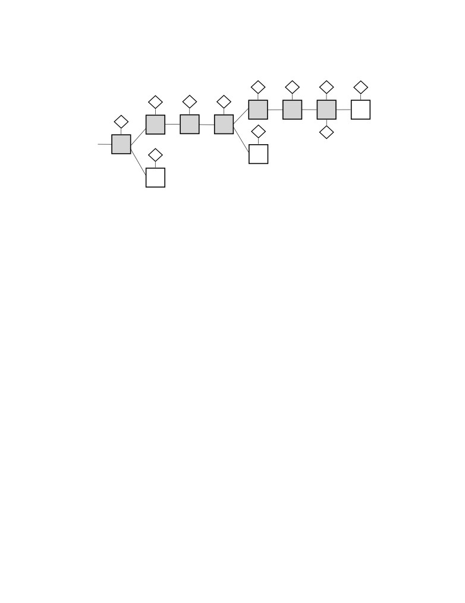
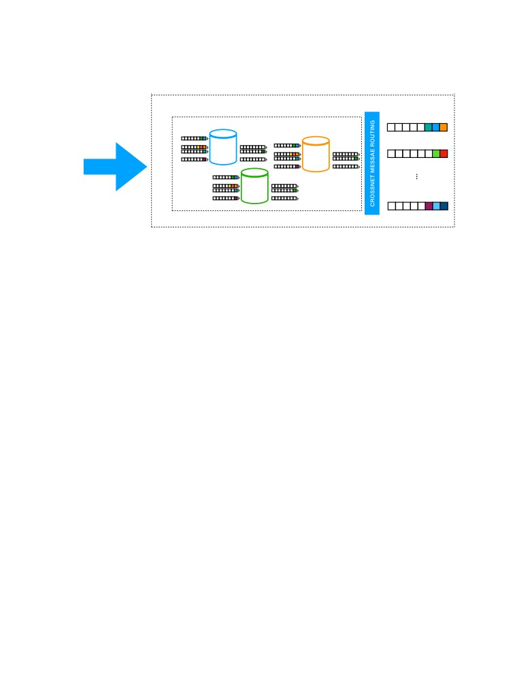
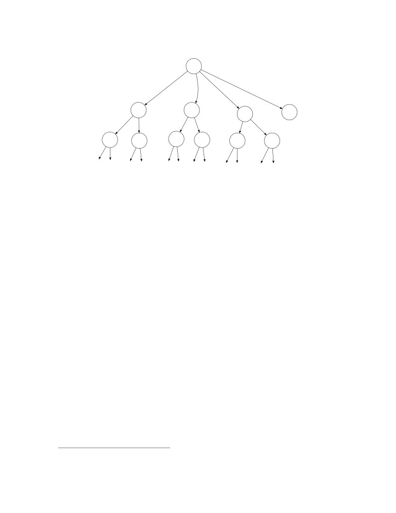
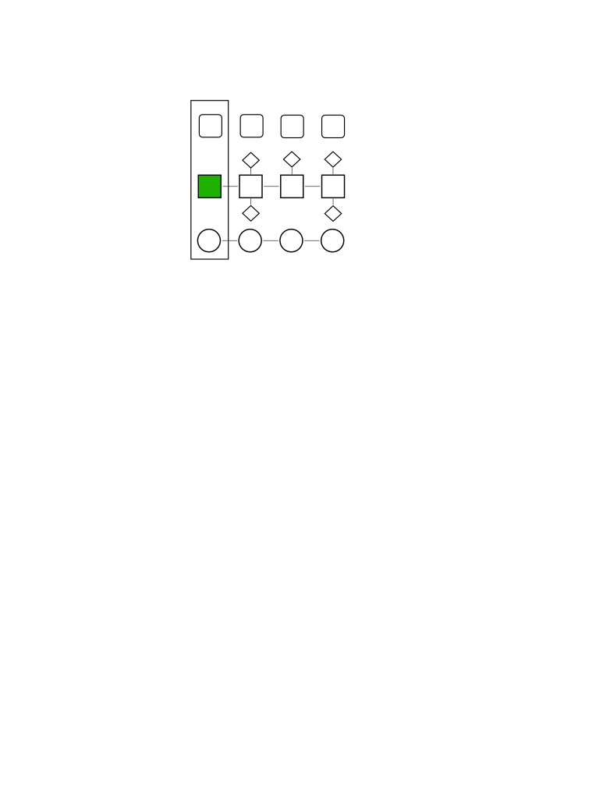

The Internet Computer for Geeks
(v1.0)
The DFINITY Team∗
January 21, 2022
Abstract
Smart contracts are a new form of software that will revolutionize how software is
written, IT systems are maintained, and applications and whole businesses are built.
Smart contracts are composable and autonomous pieces of software that run on decen-
tralized blockchains, which makes them tamperproof and unstoppable. In this paper,
we describe the Internet Computer (IC), which is a radical new design of blockchain
that unleashes the full potential of smart contracts, overcoming the limitations of smart
contracts on traditional blockchains with respect to speed, storage costs, and compu-
tational capacity. This allows smart contracts for the first time to implement fully
decentralized applications that are hosted end to end on blockchain. The IC consists
of a set of cryptographic protocols that connects independently operated nodes into a
collection of blockchains. These blockchains host and execute “canisters”, the IC’s form
of smart contracts. Canisters can store data, perform very general computations on
that data, and provide a complete technology stack, serving web pages directly to end
users. Computational and storage costs are covered by a “reverse-gas model”, where
canister developers pre-pay costs in cycles that are obtained from ICP, the native token
of the IC. ICP tokens are also used for governance: the IC is governed by a decentralized
autonomous organization, or DAO, which, among other things, determines changes to
the topology of the network and upgrades to the protocol.
1
Introduction
1.1
Unleashing smart contracts
Because of their unique features, smart contracts are the key enabler of Web3, the new
approach to the web where applications are fully controlled by their users and run on
decentralized blockchain platforms. Such decentralized applications (dapps) are typically
tokenized, meaning tokens are distributed to users as rewards for participating in the dapps.
Participation can come in many different forms, ranging from moderating and providing
content to governing a dapp and to creating and maintaining a dapp. Usually, tokens
can also be bought on exchanges; indeed, selling tokens is a common way to finance dapp
development. Finally, tokens are also used as a form of payment for the services or contents
a dapp offers. Smart contracts running on today’s blockchain platforms, including all the
1
popular ones (such as Ethereum), suffer from many limitations, such as high transaction and
storage costs, slow computational speed, and the inability to serve frontends to users. As
a result, many popular blockchain applications are not fully decentralized but are hybrids
where most of the application is hosted on traditional cloud platforms and call out to smart
contracts on a blockchain for a small part of their overall functionality. Unfortunately, this
renders such applications non-decentralized, and opens them to many of the drawbacks of
traditional cloud-hosted applications, such as being at the mercy of cloud providers, and
being vulnerable to many single points of failure.
The Internet Computer (IC) is a new platform for executing smart contracts.
Here, we use the term “smart contract” in a very broad sense: a general-purpose, im-
mutable, tamperproof computer program whose execution is performed autonomously on a
decentralized public network.
• By general purpose, we mean that the class of smart contract programs is Turing
complete (i.e., anything computable can be computed by a smart contract).
• By immutable, we mean that, once deployed, the code of a smart contract cannot be
changed by a party unilaterally.1
• By tamperproof, we mean that the instructions of the program are carried out faithfully
and that intermediate and final results are accurately stored and/or transmitted.
• By autonomous, we mean that a smart contract is executed automatically by the
network, without the need for any action on the part of any individual.
• By a decentralized public network, we mean of network of computers that is publicly
accessible, geographically distributed, and not under the control of a small number of
individuals or organizations.
In addition, smart contracts
• are composable, meaning that they may interact with one another, and
• support tokenization, meaning that they may use and trade digital tokens.
Compared to existing smart contract platforms, the IC is designed to:
• be more cost effective, in particular, allowing applications to compute and store data
at a fraction of the cost of previous platforms;
• provide higher throughput and lower latency for processing smart contract transac-
tions;
• be more scalable, in particular, the IC can process unbounded volumes of smart con-
tract data and computation natively because it can grow in capacity by adding more
nodes to the network.
1The IC allows a range of mutability policies for smart contracts, ranging from purely immutable to
unilaterally upgradable, with other options in between.
2
In addition to providing a smart contract platform, the IC is designed to act as a
complete technology stack, such that systems and services can be built that run entirely on
the IC. In particular, smart contracts on the IC can service HTTP requests created by end
users, so that smart contracts can directly serve interactive web experiences. This means
that systems and services can be created without relying on corporate cloud hosting services
or private servers, thus providing all of the benefits of smart contracts in a true end-to-end
fashion.
Realizing the vision of Web3. For end-users, accessing IC-based services is largely
transparent. Their personal data is more secure than when accessing applications on a
public or private cloud, but the experience of interacting with the application is the same.
For the people creating and managing those IC-based services, however, the IC elimi-
nates many of the costs, risks, and complexities associated with developing and deploying
modern applications and microservices. For example, the IC platform provides an alterna-
tive to the consolidation driven by large technology companies that are monopolizing the
Internet. In addition, its secure protocol guarantees reliable message delivery, transparent
accountability, and resilience without relying on firewalls, backup facilities, load balancing
services, or failover orchestration.
Building the IC is about restoring the Internet to its open, innovative, and creative roots
— in other words, to realize the vision of Web3. To focus on a few specific examples, the
IC does the following:
• Supports interoperability, shared functions, permanent APIs, and ownerless applica-
tions, all of which reduce platform risk and encourages innovation and collaboration.
• Persists data automatically in memory, which eliminates the need for database servers
and storage management, improves computational efficiency, and simplifies software
development.
• Simplifies the technology stack that IT organizations need to integrate and manage,
which improves operational efficiency
1.2
High level view of the Internet Computer
To a first approximation, the IC is a network of interacting replicated state machines.
The notion of a replicated state machine is a fairly standard concept in distributed systems
[Sch90], but we give a brief introduction here, beginning with the notion of a state machine.
A state machine is a particular model of computation. Such a machine maintains a
state, which corresponds to main memory or other forms of data storage in an ordinary
computer. Such a machine executes in discrete rounds: in each round, it takes an input,
applies a state transition function to the input and the current state, obtaining an
output and a new state. The new state becomes the current state in the next round.
The state transition function of the IC is a universal function, meaning that some
of the inputs and data stored in the state may be arbitrary programs which act on other
inputs and data. Thus, such a state machine represents a general (i.e., Turing complete)
model of computation.
3
To achieve fault tolerance, the state machine may be replicated. A replicated state
machine comprises a subnet of replicas, each of which is running a copy of the same state
machine. A subnet should continue to function — and to function correctly — even if some
replicas are faulty.
It is essential that each replica in a subnet processes the same inputs in the same order.
To achieve this, the replicas in a subnet must run a consensus protocol [Fis83], which
ensures that all replicas in a subnet process inputs in the same order. Therefore, the internal
state of each replica will evolve over time in exactly the same way, and each replica will
produce exactly the same sequence of outputs. Note that an input to a replicated state
machine on the IC may be an input generated by an external user, or an output generated
by another replicated state machine. Similarly, an output of a replicated state machine may
be either an output directed to an external user, or an input to another replicated state
machine.
1.3
Fault Models
In this area of computer science, one typically considers two types of replica failures: crash
faults and Byzantine faults. A crash fault occurs when a replica abruptly stops and does
not resume. Byzantine faults are failures in which a replica may deviate in an arbitrary
way from its prescribed protocol. Moreover, with Byzantine faults, one or possibly several
replicas may be directly under the control of a malicious adversary who may coordinate the
behavior of these replicas. Of the two types of faults, Byzantine faults are potentially far
more disruptive.
Protocols for consensus and for realizing replicated state machines typically make as-
sumptions about how many replicas may be faulty and to to what degree (crash or
Byzantine) they may be faulty. In the IC, the assumption is that if a given subnet has n
replicas, then less than n/3 of these replicas are faulty and these faults may be Byzantine.
(Note that the different subnets in the IC may have different sizes.)
1.4
Communication Models
Protocols for consensus and for implementing replicated state machines also typically make
assumptions about the communication model, which characterizes the ability of an ad-
versary to delay the delivery of messages between replicas. At opposite ends of the spectrum,
we have the following models:
• In the synchronous model, there exists some known finite time bound δ, such that
for any message sent, it will be delivered in less than time δ.
• In the asynchronous model, for any message sent, the adversary can delay its
delivery by any finite amount of time, so that there is no bound on the time to deliver
a message; however, each message must eventually be delivered.
Since the replicas in an IC-subnet are typically distributed around the globe, the syn-
chronous communication model would be highly unrealistic. Indeed, an attacker could
4
compromise the correct behavior of the protocol by delaying honest replicas or the commu-
nication between them. Such an attack is generally easier to mount than gaining control
over and corrupting an honest replica.
In the setting of a globally distributed subnet, the most realistic and robust model is the
asynchronous model. Unfortunately, there are no known consensus protocols in this model
that are truly practical (more recent asynchronous consensus protocols, as in [MXC+16],
attain reasonable throughput, but not very good latency). So like most other practical
Byzantine fault tolerant systems that do not rely on synchronous communication (e.g.,
PBFT [CL99, BKM18, AMN+20]), the IC opts for a compromise: a partial synchrony
communication model [DLS88]. Such partial synchrony models can be formulated in various
ways. The partial synchrony assumption used by the IC says, roughly speaking, that for each
subnet, communication among replicas in that subnet is periodically synchronous for short
intervals of time; moreover, the synchrony bound δ does not need to be known in advance.
This partial synchrony assumption is only needed to ensure that the consensus protocol
makes progress (the so-called liveness property). The partial synchrony assumption (nor,
for that matter, the eventual delivery assumption) is not needed to ensure correct behavior
of consensus (the so-called safety property), nor is it needed anywhere else in the IC protocol
stack.
Under the assumption of partial synchrony and Byzantine faults, it is known that our
bound of f < n/3 on the number of faults is optimal.
1.5
Permission Models
The earliest protocols for consensus (e.g., PBFT [CL99]) were permissioned, in the sense
that the replicas comprising a replicated state machine are governed by a centralized or-
ganization, which determines which entities provide replicas, the topology of the network,
and possibly also implements some kind of centralized public-key infrastructure. Permis-
sioned consensus protocols are typically the most efficient, and while they do avoid a single
point of failure, the centralized governance is undesirable for certain applications, and it is
antithetical to the spirit of the burgeoning Web3 era.
More recently, we have seen the rise of permissionless consensus protocols, such as
Bitcoin [Nak08], Ethereum [But13], and Algorand [GHM+17]. Such protocols such are
based on a blockchain and either a proof of work (PoW) (e.g., Bitcoin, Ethereum prior
to v2.0) or a proof of stake (PoS) (e.g., Algorand, Ethereum v2.0) . While such protocols
are completely decentralized, they are much less efficient than permissioned protocols. We
also point out that, as observed in [PSS17], PoW-based consensus protocols such as Bitcoin
cannot guarantee correctness (i.e., safety) in an asynchronous communication network.
The IC’s permission model is a hybrid model, obtaining the efficiency of a permissioned
protocol while offering many of the benefits of a decentralized PoS protocol. This hybrid
model is called a DAO-controlled network and (roughly speaking) works as follows:
each subnet runs a permissioned consensus protocol, but a decentralized autonomous
organization (DAO) determines which entities provide replicas, configures the topology of
the network, provides a public-key infrastructure, and controls which version of the protocol
is deployed to the replicas. The IC’s DAO is called the network nervous system (NNS),
and is based on a PoS, so that all decisions taken by the NNS are made by community
5
members whose voting power is determined by how much of the IC’s native governance
token they have staked in the NNS (see Section 1.8 for more in this token). Through this
PoS-based governance system, new subnets can be created, replicas may be added to or
removed from existing subnets, software updates may be deployed, and other modifications
to the IC may be effected. The NNS is itself a replicated state machine, which (like any
other) runs on a particular subnet whose membership is determined via the same PoS-based
governance system. The NNS maintains a database called the registry, which keeps track
of the topology of the IC: which replicas belong to which subnets, the public keys of the
replicas, and so on. (See Section 1.10 for a few more details on the NNS.)
Thus, one sees that the IC’s DAO-controlled network allows the IC to achieve many of
the practical benefits of a permissioned network (in terms of more efficient consensus), while
maintaining many of the benefits of a decentralized network (with governance controlled by
a DAO).
The replicas running the IC protocol are hosted on servers in geographically distributed,
independently operated data centers. This also bolsters the security and decentralized
nature of the IC.
1.6
Chain-key cryptography
The IC’s consensus protocol does, in fact, use a blockchain, but it also uses public-key
cryptography, specifically, digital signatures: the registry maintained by the NNS is used
to bind public keys to replicas and subnets as a whole. This enables a unique and pow-
erful collection of technologies that we call chain-key cryptography, which has several
components.
1.6.1
Threshold signatures
The first component of chain-key cryptography is threshold signatures: this is a well es-
tablished cryptographic technique that allows a subnet to have a public signature-verification
key whose corresponding secret signing key is split into shares, which are distributed among
all of the replicas in a subnet in such a way that the shares held by the corrupt replicas
do not let them forge any signatures, while the shares held by the honest replicas allow the
subnet to generate signatures consistent with the policies and protocols of the IC.
One critical application of these threshold signatures is that
an individual output of one subnet may be verified by another subnet or external
user by simply validating a digital signature with respect to the public signature-
verification key of the (first) subnet.
Note that the public signature-verification key for a subnet may be obtained from the NNS
— this public signature-verification key remains constant over the lifetime of a subnet (even
as the membership of a subnet may change over that lifetime). This stands in contrast to
many non-scalable blockchain-based protocols, which require the entire blockchain to be
validated in order to validate any single output.
As we will see, these threshold signatures have a number of other applications within
the IC. One such application is to give each replica in a subnet access to unpredictable
6
pseudorandom bits (derived from such signatures). This is the basis for the Random
Beacon used in consensus and the Random Tape used in execution.
In order to securely deploy threshold signatures, the IC uses an innovative distributed
key generation (DKG) protocol that constructs a public signature-verification key and
provisions each replica with a share of the corresponding secret signing key, and works
within our fault and communication model.
1.6.2
Chain-evolution technology
Chain-key cryptography also includes a sophisticated collection of technologies for robustly
and securely maintaining a blockchain based replicated state machine over time, which
together form what we call chain-evolution technology. Each subnet operates in epochs
of many rounds (typically on the order of a few hundreds of rounds). Using threshold
signatures and a number of other techniques, chain-evolution technology implements many
essential maintenance activities that are executed periodically with a cadence that is tied
to epochs:
Garbage collection: At the end of each epoch, all inputs that have been processed, and all
consensus-level protocol messages needed to order those inputs, may safely be purged
from the memory of each replica. This is essential in keeping the storage requirements
for the replicas from growing without bound. This is in contrast to many non-scalable
blockchain-based protocols, where the entire blockchain from the genesis block must
be stored.
Fast forwarding: If a replica in a subnet falls very far behind its peers (because it is
down or disconnected from the network for a long time), or a new replica is added to
a subnet, it can be fast forwarded to the beginning of the most recent epoch, without
having to run the consensus protocol and process all of the inputs up to that point.
This is in contrast to many non-scalable blockchain-based protocols, where the entire
blockchain from the genesis block must be processed.
Subnet membership changes: The membership of the subnet (as determined by the
NNS, see Section 1.5) may change over time. This can only happen at an epoch
boundary, and needs to be done with care to ensure consistent and correct behavior.
Pro-active resharing of secrets: We mentioned above in Section 1.6.1 how the IC uses
chain-key cryptography — specifically, threshold signatures — for output verification.
This is based on secret sharing, which avoids any single point of failure by splitting
up a secret (in this case, a secret signing key) into shares that are stored among the
replicas. At the beginning of each epoch, these shares are pro-actively reshared.
This achieves two goals:
• When the membership of a subnet changes, the resharing will ensure that any
new members have an appropriate share of the secret, while any replicas that
are no longer members no longer have a share of the secret.
• If a small number of shares are leaked to an attacker in any one epoch, or even
in every epoch, those shares will not do an attacker any good.
7
Protocol upgrades: When the IC protocol itself needs to be upgraded, to fix bugs or add
new features, this can be done automatically using a special protocol at the beginning
of an epoch.
1.7
Execution Models
As already mentioned, replicated state machines in the IC can execute arbitrary programs.
The basic computational unit in the IC is called a canister, which is roughly the same as
the notion of a process, in that it comprises both a program and its state (which changes
over time).
Canister programs are encoded in WebAssembly, or Wasm for short, which is a binary
instruction format for a stack-based virtual machine. Wasm is an open standard.2 While it
was initially designed to enable high-performance applications on web pages, it is actually
very well suited to general-purpose computation.
The IC provides a run-time environment for executing Wasm programs in a canister, and
to communicate with other canisters and external users (via message passing). While, in
principle, one can write a canister program in any language that may be compiled to Wasm,
a language called Motoko has been designed that is well aligned with the operational se-
mantics of the IC. Motoko is a strongly typed, actor-based3 programming language with
built-in support for orthogonal persistence4 and asynchronous message passing. Orthogo-
nal persistence simply means that all memory maintained by a canister is automatically
persisted (i.e., it does not have to be written to a file). Motoko has a number of productiv-
ity and safety features, including automatic memory management, generics, type inference,
pattern matching, and both arbitrary and fixed-precision arithmetic.
In addition to Motoko, the IC also provides a messaging interface definition language
and wire format called Candid, for typed, high-level, and cross-language interoperability.
This allows any two canisters, even if written in different high-level languages, to easily
communicate with one another.
To fully support canister development in any given programming language, besides a
Wasm compiler for that language, certain run-time support must also be provided. At the
present time, in addition to Motoko, the IC also fully supports canister development in the
Rust programming language.
1.8
Utility token
The IC makes use of a utility token called ICP. This token is used for the following
functions:
Staking in the NNS: As already discussed in Section 1.5, ICP tokens may be staked in
the NNS to acquire voting rights so as to participate in the DAO that controls the
IC network. Users that have ICP tokens staked in the NNS and who participate in
4See
8
the NNS governance also receive newly minted ICP tokens as a voting reward. The
amount of the award is determined by policies established and enforced by the NNS.
Conversion to Cycles: ICP is used to pay for the usage of the IC. More specifically, ICP
tokens can be converted to cycles (i.e., burned), and these cycles are used to pay for
creating canisters (see Section 1.7) and for the resources that canisters use (storage,
CPU, and bandwidth). The rate at which ICP is converted to cycles is determined
by the NNS.
Payment to Node Providers: ICP tokens are used to pay the node providers—these
are the entities that own and operate the computing nodes that host the replicas that
make up the IC. At regular intervals (currently monthly), the NNS decides on the
number of newly minted tokens that each node provider should receive, and sends the
tokens to the node provider’s account. Payment of tokens is conditioned on providing
reliable service to the IC, according to specific policies established and enforced by
the NNS.
1.9
Boundary Nodes
Boundary nodes provide the network edge services of the IC. In particular, they offer
• clearly defined entry points to the IC,
• denial of service protection for the IC,
• seamless access to the IC from legacy clients (e.g., web browsers).
To facilitate seamless access to the IC from a legacy client, boundary nodes provide func-
tionality to translate a standard HTTPS request from a user to an ingress message directed
toward a canister on the IC, and then route this ingress message to specific replicas on the
subnet where this canister resides. Furthermore, boundary nodes offer additional services
to improve the user experience: caching, load balancing, rate limiting, and the ability for
legacy clients to authenticate responses from the IC.
A canister is identified by a URL on the ic0.app domain. Initially, a legacy client looks
up the corresponding DNS record for the URL, obtains an IP address of a boundary node,
and then sends an initial HTTPS request to this address. The boundary node returns a
javascript-based “service worker” that will be executed in the legacy client. After this, all
interactions between the legacy client and the boundary node will be done via this service
worker.
One of the essential tasks carried out by the service worker is to authenticate responses
from the IC using chain-key cryptography (see Section 1.6). To do this, the public verifica-
tion key for the NNS is hard-coded in the service worker.
The boundary node itself is responsible for routing requests to a replica on the subnet
on which the specified canister is hosted. The information needed to perform this routing is
obtained by the boundary node from the NNS. The boundary node keeps a list with replicas
that provide timely replies and selects a random replica from this list.
9
All communication between legacy clients and boundary nodes and between boundary
nodes and replicas is secured via TLS.5
In addition to legacy clients, it is also possible to interact with boundary nodes using “IC
native” clients, which already include the service-worker logic, and do not need to retrieve
the service worker program from the boundary node.
Just as for replicas, the deployment and configuration of boundary nodes is controlled
by the NNS.
1.10
More details of the NNS
As already mentioned in Section 1.5, the network nervous system (NNS) is an algorithmic
governance system that controls the IC. It is realized by a set of canisters on a special sys-
tem subnet. This subnet is like any other subnet, but is configured somewhat differently
(as one example, canisters on the system subnet are not charged for the cycles they use).
Some of the most relevant NNS canisters are
• the registry canister, which stores the configuration of the IC, i.e., which repli-
cas belong to which subnet, the public keys associated with subnets and individual
replicas, and so on.
• the governance canister, which manages the decision making and voting on how
the IC should be evolved, and
• the ledger canister, which keeps track of the users’ ICP utility token accounts and
the transactions between them.
1.10.1
Decision making on the NNS
Anyone can participate in NNS governance by staking ICP tokens in so-called neurons.
Neuron holders can then suggest and vote on proposals, which are suggestions on how the
IC should be changed, e.g., how the subnet topology or the protocol should be changed. The
neurons’ voting power for decision making is based on proof of stake. Intuitively, neurons
with more staked ICP tokens have more voting power. However, the voting power also
depends on some other neuron characteristics, e.g., more voting power is given to neuron
holders that are committed to keep their tokens staked for a longer period of time.
Each proposal has a determined voting period. A proposal is adopted if at the voting
period’s end, a simple majority of the total voting power has voted in favor of the proposal
and these Yes-votes constitute a given quorum (currently 3%) of the total voting power.
Otherwise, the proposal is rejected. In addition, a proposal is adopted or rejected at any
point if an absolute majority (more than half of the total voting power) is in favor or against
the proposal, respectively.
If a proposal is adopted, the governance canister automatically executes the decision.
For example, if a proposal suggests changing the network topology and is adopted, the
governance canister automatically updates the registry with the new configurations.
10
Figure 1: The layers of the Internet Computer Protocol
1.11
Work in progress
The architecture of the IC is still evolving and expanding. Here are a few new features that
will be deployed soon:
DAO-controlled canisters. Just like the overall configuration of the IC is controlled by
the NNS, any canister may also be controlled by its own DAO, called the service
nervous system (SNS). The DAO controlling a canister can control updates to the
canister logic, as well as issuing privileged commands to be carried out by the canister.
Threshold ECDSA. ECDSA signatures [JMV01] are used in cryptocurrencies, such as
Bitcoin and Ethereum, as well as in many other applications. While threshold signa-
tures are already an essential ingredient in the IC, these are not threshold ECDSA
signatures. This new feature will allow individual canisters to control an ECDSA sign-
ing key, which is securely distributed among all of the replicas on the subnet hosting
the canister.
Bitcoin and Ethereum integration. Building on the new threshold ECDSA feature,
this feature will allow canisters to interact with the Bitcoin and Ethereum blockchains,
including the ability to sign transactions.
HTTP integration. This feature will allow canisters to read arbitrary web pages (external
to the IC).
2
Architecture overview
As illustrated in Figure 1, the Internet Computer Protocol consists of four layers:
• peer-to-peer layer (see Section 4);
• consensus layer (see Section 5);
• routing layer (see Section 6);
11
• execution layer (see Section 7).
Chain-key cryptography impacts several layers, and is discussed in detail in Sections 3
(threshold signatures) and 8 (chain-evolution technology).
2.1
Peer-to-peer layer
The peer-to-peer layer’s task is to transport protocol messages between the replicas in a
subnet. These protocol messages consist of
• messages used to implement consensus,
• input messages generated by an external user.
Basically, the service provided by the peer-to-peer is a “best effort” broadcast channel:
if an honest replica broadcasts a message, then that message will eventually be
received by all honest replicas in the subnet.
Design goals include the following:
• Bounded resources. All algorithms must work with bounded resources (memory,
bandwidth, CPU).
• Prioritization. Different messages may be treated with different priorities, depend-
ing on certain attributes (e.g., type, size, round), and these priorities may change over
time.
• Efficiency. High throughput is more important than low latency.
• DOS/SPAM resilience. Corrupt replicas should not prevent honest replicas from
communicating with one another.
2.2
Consensus layer
The job of the consensus layer of the IC is to order inputs so that all replicas in a subnet
will process such inputs in the same order. There are many protocols in the literature for
this problem. The IC uses a new consensus protocol, which is described here at a high level.
Any secure consensus protocol should guarantee two properties, which (roughly stated)
are:
• safety: all replicas in fact agree on the same ordering of inputs, and
• liveness: all replicas should make steady progress.
The IC consensus protocol is designed to be
• extremely simple, and
• robust: performance degrades gracefully when some replicas are malicious.
12
As discussed above, we assume f < n/3 faulty (i.e., Byzantine) replicas. Also, liveness
holds under a partial synchrony assumption, while safety is guaranteed, even in a completely
asynchronous network.
Like a number of consensus protocols, the IC consensus protocol is based on a blockchain.
As the protocol progresses, a tree of blocks is grown, starting from a special genesis block
that is the root of the tree. Each non-genesis block in the tree contains (among other
things) a payload, consisting of a sequence of inputs, and a hash of the block’s parent in
the tree. The honest replicas have a consistent view of this tree: while each replica may
have a different, partial view of this tree, all the replicas have a view of the same tree. In
addition, as the protocol progresses, there is always a path of finalized blocks in this tree.
Again, the honest replicas have a consistent view of this path: while each replica may have
a different, partial view of this path, all the replicas have a view of the same path. The
inputs in the payloads of the blocks along this path are the ordered inputs will be processed
by the execution layer of the Internet Computer.
The protocol proceeds in rounds. In round h of the protocol, one or more blocks of
height h are added to the tree. That is, the blocks added in round h are always at a distance
of exactly h from the root. In each round, a pseudo-random process is used to assign each
replica a unique rank, which is an integer in the range 0, . . . , n − 1. This pseudo-random
process is implemented using a Random Beacon (this makes use of threshold signatures,
mentioned above in Section 1.6.1 and discussed in more detail in Section 3). The replica
of lowest rank is the leader of that round. When the leader is honest and the network is
synchronous, the leader will propose a block, which will be added to the tree; moreover,
this will be the only block added to the tree in this round and it will extend the finalized
path. If the leader is not honest or the network is not synchronous, some other replicas
of higher rank may also propose blocks, and also have their blocks added to the tree. In
any case, the logic of the protocol gives highest priority to the leader’s proposed block
and some block or blocks will be added to this tree in this round. Even if the protocol
proceeds for a few rounds without extending the finalized path, the height of the tree will
continue to grow with each round, so that when the finalized path is extended in round h,
the finalized path will be of length h. A consequence of this, even if the latency occasionally
increases because of faulty replicas or unexpectedly high network latency, the throughput of
the protocol remains essentially constant.
The consensus protocol relies on digital signatures to authenticate messages sent between
replicas. To implement the protocol, each replica is associated with a public verification
key for a signature scheme. The association of replicas to public keys is obtained from the
registry maintained by the NNS.
2.3
Message routing
As discussed in Section 1.7, basic computational unit in the IC is called a canister. The IC
provides a run-time environment for executing programs in a canister, and to communicate
with other canisters and external users (via message passing).
The consensus layer bundles inputs into payloads, which get placed into blocks, and
as blocks are finalized, the corresponding payloads are delivered to the message routing
layer, then processed by the execution environment, which updates the state of the
13
canisters on the replicated state machine and generates outputs, and these outputs are
processed by the message routing layer.
It is useful to distinguish between two types of inputs:
ingress messages: these are messages from external users;
cross-subnet messages: these are messages from canisters on other subnets.
We can also distinguish between two types of outputs:
ingress message responses: these are responses to ingress messages (which may be re-
trieved by external users);
cross-subnet messages: these are messages to canisters on other subnets.
Upon receiving a payload from consensus, the inputs in that payload are placed into
various input queues. For each canister C running on a subnet, there are several in-
put queues: one for ingress messages to C, and for each other canister C′ with whom C
communicates, one for cross-subnet messages to C from C′.
In a each round, the execution layer will consume some of the inputs in these queues,
update the replicated state of the relevant canisters, and place outputs in various output
queues. For each canister C running on a subnet, there are several output queues: for each
other canister C′ with whom C communicates, one for cross-subnet messages to C′ from C.
The message routing layer will take the messages in these output queues and place them into
subnet-to-subnet streams to be processed by an crossnet transfer protocol, whose
job it is to actually transport these messages to other subnets.
In addition to these output queues, there is also an ingress history data structure.
Once an ingress message has been processed by a canister, a response to that ingress
message will be recorded in this data structure. At that point, the external user who
provided the ingress message will be able to retrieve the corresponding response.
(Note
that ingress history does not maintain the full history of all ingress messages.)
Note that the replicated state comprises the state of the canisters, as well as “system
state”, including the above-mentioned queues and streams, as well as the ingress history data
structure. Thus, both the message routing and execution layers are involved in updating
and maintaining the replicated state of a subnet. It is essential that all of this state is
updated in a completely deterministic fashion, so that all replicas maintain exactly the
same state.
Also note that the consensus layer is decoupled from the message routing and execution
layers, in the sense that any forks in the consensus blockchain are resolved before their
payloads are passed to message routing, and in fact, consensus does not have to keep in
lock step with message routing and consensus and is allowed to run a bit ahead.
2.3.1
Per-round certified state
In each round, some of the state of a subnet will be certified. The per-round certified
state is certified using chain-key cryptography. Among other things, the certified state in
a given round consists of
14
• cross-subnet messages that were recently added to the subnet-to-subnet streams;
• other metadata, including the ingress history data structure.
The per-round certified state is certified using a threshold signature (see Section 1.6.1).
Per-round certified state is used in several ways in the IC:
• Output authentication. Cross-subnet messages and responses to ingress messages are
authenticated using per-round certified state.
• Preventing and detecting non-determinism. Consensus guarantees that each replica
processes inputs in the same order. Since each replica processes these inputs determin-
istically, each replica should obtain the same state. However, the IC is designed with
an extra layer of robustness to prevent and detect any (accidental) non-deterministic
computation, should it arise. The per-round certified state is one of the mechanisms
used to do this.
• Coordination with consensus. The per-round certified state is also used to coordinate
the execution and consensus layers, in two different ways:
- If consensus is running ahead of execution (whose progress is determined by the
last round whose state is certified), consensus will be “throttled”.
- Inputs to consensus must pass certain validity checks, and these validity checks
may depend on certified state, which all replicas must agree upon.
2.3.2
Query calls vs update calls
As we have described it so far, an ingress messages must pass through consensus so that
they are processed in the same order by all replicas on a subnet. However, an important
optimization is available to those ingress messages whose processing does not modify the
replicated state of a subnet. These are called query calls — as opposed to other ingress
messages, which are called update calls. Query calls are allowed to perform computations
which read and possibly update the state of a canister, but any updates to the state of a
canister are never committed to the replicated state. As such, a query call may be processed
directly by a single replica without passing through consensus, which greatly reduces the
latency for obtaining a response from a query call.
In general, a response to a query call is not recorded in the ingress history data structure,
and therefore cannot be authenticated using the per-round certified state mechanism as
described above. However, the IC makes it possible for canisters to store data (while
processing update calls) in special certified variables, which can be authenticated by this
mechanism; as such, query calls that return as their value a certified variable can still be
authenticated.
2.3.3
External user authentication
One of the main differences between an ingress message and a cross-subnet message is the
mechanism used for authenticating these messages. While chain-key cryptography is used
15
to authenticate cross-subnet messages, a different mechanism is used to authenticate ingress
messages from external users.
There is no central registry for external users. Rather, an external user identifies himself
to a canister using a user identifier, which is a hash of a public signature-verification key.
The user holds a corresponding secret signing key, which is used to sign ingress messages.
Such a signature, as well as the corresponding public key, is sent along with the ingress
message. The IC automatically authenticates the signature and passes the user identifier to
the appropriate canister. The canister may then authorize the requested operation, based
on the user identifier and other parameters to the operation specified in the ingress message.
First-time users generate a key pair and derive their user identifier from the public key
during their first interaction with the IC. Returning users are authenticated using the secret
key that is stored by the user agent. A user may associate several key pairs with a single
user identity, using signature delegation. This is useful, as it allows a single user to access
the IC from several devices using the same user identity.
2.4
Execution layer
The execution layer processes one input at a time. This input is taken from one of the
input queues, and is directed to one canister. Based on this input and the state of the
canister, the execution environment updates the state of the canister, and additionally may
add messages to output queues and update the ingress history (possibly with a response to
an earlier ingress message).
Each subnet has access to a distributed pseudorandom generator (PRG). Pseudo-
random bits are derived from a seed that itself is a threshold signature called the Random
Tape (see Section 1.6.1 and more detail in Section 3). There is a different Random Tape
for each round of the consensus protocol.
The basic properties of the random tape are:
1. Before a block at height h is finalized by any honest replica, the Random Tape at
height h + 1 is guaranteed to be unpredictable.
2. By the time block at height h + 1 is finalized by any honest replica, that replica will
typically have all the shares it needs to construct the Random Tape at height h + 1.
To obtain pseudorandom bits, a subnet must make a request for these bits via a “system
call” from the execution layer in some round, say h. The system will then respond to that
request later, using the Random Tape at height h+1. By property (1) above, it is guaranteed
that the requested pseudorandom bits are unpredictable at the time the request is made.
By property (2) above, the requested random bits will typically be available at the time the
next block is finalized.
2.5
Putting it all together
We trace through the typical flow to process a user request on the IC.
1. A user’s request M to a canister C is sent by the user’s client to a boundary node (see
Section 1.9), and the boundary node sends M to a replica on the subnet that hosts
canister C.
16
2.
After receiving M , this replica will broadcast M to all other replicas on the subnet,
using the peer-to-peer layer (see Section 2.1).
3.
Having received M , the leader for the next round of consensus (see Section 2.2) will
bundle M with other inputs to form the payload for a block B that the leader proposes.
4.
Some time later, block B is finalized and the payload is sent to the message routing
layer (see Section 2.3) for processing. Note that the peer-to-peer layer is also used by
consensus to finalize this block.
5.
The message routing layer will place M in the input queue of the canister C.
6.
Some time later, the execution layer (see Section 2.4) will process M , updating the
internal state of the canister C.
In some situations, the canister C will be able to immediately compute a response R
to the request M . In this case, R is placed in the ingress history data structure.
In other situations, processing the request M may require making a request to a
another canister. In this example, let us suppose that to process this particular
request M , the canister C must make a request M′ to another canister C′ that resides
on another subnet. This second request M′ will be placed in the output queue of the
C, and then the following steps are performed.
7.
Some time later, message routing will move M′ into an appropriate cross-subnet
stream, and this will eventually be transported to the subnet hosting C′.
8.
On the second subnet, the request M′ will be obtained from the first subnet, and
eventually pass through consensus and message routing on the second subnet and
then be processed by execution. The execution layer will update the internal state of
canister C′ and generate a response R′ to the request M′. The response R′ will go
in the output queue of canister C′, and eventually be placed in a cross-subnet stream
and transported back to the first subnet.
9.
Back on the first subnet, the response R′ will be obtained from the second subnet,
and eventually pass through consensus and message routing on the first subnet and
then be processed by execution. The execution layer will update the internal state
of canister C and generate a response R to the original request message M . This
response will be recorded in the ingress history data structure.
Regardless of which execution path is taken, the response R to request M will eventually
be recorded in the ingress history data structure on the subnet that hosts canister C. To
obtain this response, the user’s client must perform a kind of “query call” (see Section 2.3.2).
As discussed in Section 2.3.1, this response will be authenticated via chain-key cryptography
(specifically, using a threshold signature). The authentication logic itself (i.e., threshold
signature verification) will be performed by the client using the service worker originally
obtained by the client from the boundary node.
17
3
Chain-key crytography I: threshold signatures
A critical component of the IC’s chain-key cryptography is a threshold signature scheme
[Des87]. The IC uses threshold signatures for a number of purposes. Let n be the number
of replicas in a subnet and let f be a bound on the number of corrupt replicas.
• The Consensus Layer makes use of an (f + 1)-out-of-n threshold signature to realize
a random beacon (see Section 5.5).
• The Execution Layer makes use of an (f + 1)-out-of-n threshold signature to realize
a random tape, which is used to provide unpredictable pseudorandom numbers to
canisters (see Section 7.1).
• The Execution Layer makes use of an (n − f )-out-of-n threshold signature to certify
the replicated state. This is used both to authenticate the outputs of a subnet (see
Section 6.1) and to implement the fast-forwarding feature of the IC’s chain-evolution
technology (see Section 8.2).
For the first two applications (the random beacon and random tape), it is essential that
the threshold signatures are unique, i.e., for a given public key and message, there is only
one valid signature. This is required as we use the signature as a seed to a pseudorandom
generator, and all replicas who compute such a threshold signature must agree on the same
seed.
3.1
Threshold BLS signatures
We implement threshold signatures based on the BLS signature scheme [BLS01], which is
trivial to adapt to the threshold setting.
The ordinary (i.e., non-threshold) BLS signature scheme makes use of two groups, G
and G′, both of prime order q. We assume that G is generated by g ∈ G and G′ is generated
by g′ ∈ G′. We also assume a hash function HG′ that maps its inputs to G′ (and which is
modeled as a random oracle). The secret signing key is an element x ∈ Zq and the public
verification key is V := gx ∈ G.
In the non-threshold setting, to sign a message m, the signer computes h′ ← HG′ (m) ∈
G′ and then computes the signature σ := (h′)x ∈ G′. To verify that such a signature is
valid, one must test if logh′ σ = logg V . To be able to perform this test efficiently, the BLS
scheme uses the notion of a pairing on the groups G and G′, which is a special algebraic
tool that is available when G and G′ are elliptic curves of a special type. We shall not be
able to go into the details of pairings and elliptic curves here. See [BLS01] for more details.
BLS signatures have the nice property (mentioned above) that signatures are unique.
In the t-out-of-n threshold setting, we have n replicas, any t of which may be used
to generate a signature on a message. On somewhat more detail, each replica Pj holds
a share xj ∈ Zq of the secret signing key x ∈ Zq , which is privately held by Pj , while
the group element Vj := gxj is publicly available. The shares (x1, . . . , xn) are a t-out-of-n
secret-sharing of x (see Section 3.4).
Given a message m, replica Pj can generate a signature share
σj := (h′)xj ∈ G′,
18
where h′ := HG′ (m) as before. To verify that such a signature share is valid, one must test
if logh′ σj = logg Vj . This can be done using a pairing, as discussed above — in fact, this is
exactly the same as the validity test for an ordinary BLS signature with public key Vj .
This scheme satisfies the following reconstruction property:
Given any collection of t valid signature shares σj on a message m (contributed
by distinct replicas), we can efficiently compute a valid BLS signature σ on m
under the public verification key.
In fact, σ can be computed as
∏
σ← σλj,
(1)
j
j
where the λj ’s can be efficiently computed just from the indices of the t con-
tributing replicas.
Under reasonable intractability assumptions for G, and modeling HG′ as a random
oracle, this scheme satisfies the following security property:
Assume that at most f replicas may be corrupted by an adversary. Then it is
infeasible for the adversary to compute a valid signature on a message unless it
obtains signature shares on that message from at least t − f honest replicas.
3.2
Distributed key distribution
To implement threshold BLS, we need a way to distribute the shares of the secret signing
key to the replicas. One way to do this would be to have a trusted party compute all
of these shares directly and distribute them to all the replicas. Unfortunately, this would
create a single point of failure. Instead, we use a distributed key generation (DKG)
protocol, which allows the replicas to essentially carry out the logic of such a trusted party
using a secure distributed protocol.
We sketch the high level ideas of the protocol currently implemented. We refer the
reader to [Gro21] for more details. The DKG protocol used is essentially non-interactive.
It uses two essential ingredients:
• a publicly verifiable secret sharing (PVSS) scheme, and
• a consensus protocol.
Although any consensus protocol could be used, not surprisingly, the one we use is that in
Section 5 (see also Section 8).
3.3
Assumptions
The basic assumptions made are the same as outlined in Section 1:
• asynchronous communication, and
• f < n/3.
19
We only indirectly make use of a partial synchrony assumption (as in Section 5.1) to ensure
that the consensus protocol attains liveness.
We also assume that for a t-out-of-n threshold signature scheme, we have
f <t≤n−f,
which (among other things) ensures that (1) the corrupt replicas cannot sign all by them-
selves, and (2) the honest replicas can sign all by themselves.
We also assume that every replica is associated with some public keys, where each replica
also holds the corresponding private key. One public key is the signing key (the same one
as in Section 5.4). Another public key is a public encryption key for a specific public-key
encryption scheme needed to implement the PVSS scheme (details follow).
3.4
PVSS scheme
Let G be the group of prime order q generated by g ∈ G introduced above. Let s ∈ Zq be
a secret. Recall that a t-out-of-n Shamir secret-sharing of s is a vector (s1, . . . , sn) ∈ Zn
q,
where
sj := a(j)
(j = 1, . . . , n).
and
a(x) := a0 + a1x + · · · + at−1xt−1 ∈ Zq [x]
is a polynomial of degree less than t with a0 := s. The key properties of such a secret
sharing are
• from any collection of t of the sj ’s, we can efficiently compute (via polynomial inter-
polation) the secret s = a0 = a(0), and
• if a1, . . . , at−1 are chosen uniformly and independently over Zq , then any collection of
fewer than t of the sj ’s reveals no information about the secret s.
At a high level, a PVSS scheme allows one replica, Pi, called the dealer, to take such
a sharing, and compute an object called a dealing, which contains
• a vector of group elements (A0,...,At−1), where Ak := gak for k = 0,...,t − 1,
• a vector of ciphertexts (c1,...,cn), where cj is the encryption of sj under Pj’s public
encryption key,
• a non-interactive zero-knowledge proof π that each cj does indeed encrypt such a
share — more precisely, that each cj decrypts the value sj satisfying
∏
gsj =
Ajk
=ga(j).
(2)
k
k=0
We note that to establish the overall security of our DKG protocol, the PVSS scheme
must provide an appropriate level of chosen ciphertext security. Specifically, the dealer
must embed its identity as associated data in the dealing, and the encrypted shares must
20
remain hidden, even under a chosen ciphertext attack wherein an adversary is allowed to
decrypt arbitrary dealings which are decrypted under associated data that is distinct from
the associated data used to create the dealing.
It is easy to realize a PVSS scheme, if one is not too concerned about efficiency. The
idea is to use an ElGamal-like encryption scheme to encrypt each sj bit by bit, and then use
a standard non-interactive zero-knowledge proof for the relation (2), which would be based
on an a standard application of the Fiat-Shamir transform (see [FS86]) to an appropriate
Sigma protocol (see [CDS94]). While this yields a polynomial-time scheme, it is not that
practical. However, there are many possible ways to optimize this type of scheme. See
[Gro21] for the details on the highly optimized PVSS scheme used in the IC.
3.5
The basic DKG protocol
Using the PVSS scheme and a consensus protocol, the basic DKG protocol is very simple.
1.
Each replica broadcasts a signed dealing of a random secret to all other replicas.
Such a signed dealing includes a dealing, along with the identity of the dealer and a
signature on the dealing under the dealer’s public signing key.
Such a signed dealing is called valid if it has the right syntactic form, and the signature
and non-interactive zero knowledge proof are valid.
2.
Using consensus the replicas agree on a set S of f + 1 valid signed dealings (from
distinct dealers).
3.
Suppose that the ith dealing in the set S contains the vector of group
elements
(Ai,0, . . . , Ai,t−1) and the vector of ciphertexts (ci,1, . . . , ci,n).
Then the public verification key for the threshold signature scheme is
∏
V := Ai,0.
i
Note that the secret signing key is implicitly defined as
x := logg V.
Pj’s share of the secret signing key x is
∑
xj :=
si,j,
i
where si,j is the decryption of ci,j under Pj ’s secret decryption key.
The public verification key for replica Pj is
∏
∏
Vj :=
Ajk
i,k =gxj .
i k=0
21
Note that the shares xj comprise a t-out-of-n Shamir secret-sharing of x. As such, the
λj values appearing in (1) are just Lagrange interpolation coefficients. This establishes
the reconstruction property stated in Section 3.1. As for the security property stated in
Section 3.1, this can be proved to hold modeling HG′ as a random oracle, and assuming
that the PVSS scheme is secure, and that the groups G and G′ (with a pairing) satisfy a
certain type of one-more Diffie-Hellman hardness assumption, which can be stated as
saying that no efficient adversary can win the following game with non-negligible probability:
The challenger chooses µ1, . . . , µk ∈ Zq and ν1, . . . , νℓ ∈ Zq at random, and gives
{gµi }k
i=1 and{(g′)νj }j=1 totheadversary.
The adversary makes a sequence of queries to the challenger, each of which is a
vector of the form {κi,j }i,j , to which the challenger responds with
∏(
)κi,j
(g′)µiνj
i,j
To end the game, the adversary outputs a vector {λi,j }i,j and a group element
h′ ∈ G′, and wins the game if
∏(
)λi,j
h′ =
(g′)µiνj
i,j
and the output vector {λi,j }i,j is not a linear combination of the query vectors.
While this type of one-more Diffie-Hellman assumption is needed in the case where
t > f + 1, one can get by with a weaker assumption when t = f + 1 (the so-called co-CDH
assumption, on which the security of the ordinary BLS scheme is based).
3.6
A resharing protocol
The basic DKG protocol can be easily modified so that instead of creating a sharing of a
fresh random secret x, it instead creates a fresh, random sharing of a previously shared
secret.
• Step 1 of the basic protocol is modified so that each replica broadcasts a signed dealing
of its existing share.
• Step 2 is modified so that a set of t valid signed dealings is agreed upon. Also, each
dealing is verified to ensure that it is indeed a dealing of the appropriate existing share
(this means that the value of Ai,0 in the ith dealing should be equal to the old value
of Vi).
• In Step 3, the computation of the new xj (and Vj ) values weight the sum (and product)
on i Lagrange interpolation coefficients.
22
4
Peer-to-peer layer
The peer-to-peer layer’s task is to transport protocol messages between the replicas in a
subnet. These protocol messages consist of
• messages used to implement consensus, e.g., block proposals, notarizations, etc. (see
Section 5);
• ingress messages (see Section 6).
Basically, the service provided by the peer-to-peer is a “best effort” broadcast channel:
if an honest replica broadcasts a messages, then that message will eventually be
received by all honest replicas in the subnet.
Design goals include the following:
• Bounded resources. All algorithms must work with bounded resources (memory,
bandwidth, CPU).
• Prioritization. Different messages may be treated with different priorities, depend-
ing on certain attributes (e.g., type, size, round), and these priorities may change over
time.
• Efficiency. High throughput is more important than low latency.
• DOS/SPAM resilience. Corrupt replicas should prevent honest replicas from com-
municating with one another.
Observe that in the consensus protocol, some messages, notably block proposals (which
can be quite large), will be rebroadcast by all replicas. This is necessary to ensure correct
behavior of that protocol. However, if implemented naively, this would be a huge waste
of resources. To avoid having all replicas broadcasting the same message, the peer-to-peer
layer makes use of an advertise-request-deliver mechanism. Instead of broadcasting a
(large) message directly, it will instead broadcast a (small) advertisement for the message:
if a replica receives such an advertisement, has not already received, and deems the message
to be important, it will request that the message is delivered. This strategy decreases
bandwidth utilization at the cost of higher latency. For small messages, this trade-off is
not worthwhile, and it makes more sense to just send the message directly, rather than an
advertisement.
For relatively small subnets, a replica that wishes to broadcast a message will send an
advertisement to all replicas in the subnet, each of which may then request that the message
is delivered. For larger subnets, this advertise-request-deliver mechanism may operate over
an overlay network. An overlay network is a connected, undirected graph whose vertices
comprise the replicas in a subnet. Two replicas are peers if there is an edge connecting
them in this graph, and replica only communicates with its peers. So when a replica wishes
to broadcast a message, it sends an advertisement for that message to its peers. Those
peers may request that the message be delivered, and upon receiving the message, if certain
conditions are met, those peers will advertise the message to their peers. This is essentially
a gossip network. This strategy again decreases bandwidth utilization at the cost of even
higher latency.
23
5
Consensus Layer
The job of the consensus layer of the IC is to order inputs so that all replicas in a subnet
will process such inputs in the same order. There are many protocols in the literature for
this problem. The IC uses a new consensus protocol, which is described here at a high level.
For more details, see the paper [CDH+21] (in particular, Protocol ICC1 in that paper).
Any secure consensus protocol should guarantee two properties, which (roughly stated)
are:
• safety: all replicas in fact agree on the same ordering of inputs, and
• liveness: all replicas should make steady progress.
The paper [CDH+21] proves that the IC consensus protocol satisfies both of these prop-
erties
The IC consensus protocol is designed to be
• extremely simple, and
• robust: performance degrades gracefully when some replicas are malicious.
5.1
Assumptions
As discussed in the introduction, we assume
• a subnet of n replicas, and
• at most f < n/3 of the replicas are faulty.
Faulty replicas may exhibit arbitrary, malicious (i.e., Byzantine) behavior.
We assume that communication is asynchronous, with no a priori bound on the delay
of messages sent between replicas. In fact, the scheduling of message delivery may be
completely under adversarial control. The IC consensus protocol guarantees safety under
this very weak communication assumption. However, to guarantee liveness, we need to
assume a form of partial synchrony, which (roughly stated) says that the network will
be periodically synchronous for short intervals of time. In such intervals of synchrony, all
undelivered messages will be delivered in less than time δ, for some fixed bound δ. The
bound δ does not have to be known in advance (the protocol is initialized with a reasonable
bound, but will dynamically adapt and increase this bound if it is too small). Regardless of
whether we are assuming an asynchronous or a partially synchronous network, we assume
that every message sent from one honest replica to another will eventually be delivered.
5.2
Protocol overview
Like a number of consensus protocols, the IC consensus protocol is based on a blockchain.
As the protocol progresses, a tree of blocks is grown, starting from a special genesis block
that is the root of the tree. Each non-genesis block in the tree contains (among other
things) a payload, consisting of a sequence of inputs, and a hash of the block’s parent in
the tree. The honest replicas have a consistent view of this tree: while each replica may
24
have a different, partial view of this tree, all the replicas have a view of the same tree. In
addition, as the protocol progresses, there is always a path of finalized blocks in this tree.
Again, the honest replicas have a consistent view of this path: while each replica may have
a different, partial view of this path, all the replicas have a view of the same path. The
inputs in the payloads of the blocks along this path are the ordered inputs will be processed
by the execution layer of the Internet Computer (see Section 7).
The protocol proceeds in rounds. In round h of the protocol, one or more blocks of
height h are added to the tree. That is, the blocks added in round h are always at a
distance of exactly h from the root. In each round, a pseudo-random process is used to
assign each replica a unique rank, which is an integer in the range 0, . . . , n − 1. This
pseudo-random process is implemented using a random beacon (see Section 5.5 below).
The replica of lowest rank is the leader of that round. When the leader is honest and the
network is synchronous, the leader will propose a block, which will be added to the tree;
moreover, this will be the only block added to the tree in this round and it will extend the
finalized path. If the leader is not honest or the network is not synchronous, some other
replicas of higher rank may also propose blocks, and also have their blocks added to the
tree. In any case, the logic of the protocol gives highest priority to the leader’s proposed
block and some block or blocks will be added to this tree in this round. Even if the protocol
proceeds for a few rounds without extending the finalized path, the height of the tree will
continue to grow with each round, so that when the finalized path is extended in round h,
the finalized path will be of length h. A consequence of this, even if the latency occasionally
increases because of faulty replicas or unexpectedly high network latency, the throughput of
the protocol remains essentially constant.
5.3
Additional properties
An additional property enjoyed by the IC consensus protocol (just like PBFT [CL99] and
HotStuff [AMN+20], and unlike others, such as Tendermint [BKM18]) is optimistic respon-
siveness [PS18], which means that when the leader is honest, the protocol may proceed at
the pace of the actual network delay, rather than some upper bound on the network delay.
We note that the simple design of the IC consensus protocol also ensures that its per-
formance degrades quite gracefully when and if Byzantine failures actually do occur. As
pointed out in [CWA+09], much of the recent work on consensus has focused so much
on improving the performance in the “optimistic case” where there are no failures, that
the resulting protocols are dangerously fragile, and may become practically unusable when
failures do occur. For example, [CWA+09] show that the throughput of existing implemen-
tations of PBFT drops to zero under certain types of (quite simple) Byzantine behavior.
The paper [CWA+09] advocates for robust consensus, in which peak performance under
optimal conditions is partially sacrificed in order to ensure reasonable performance when
some parties actually are corrupt (but still assuming the network is synchronous). The IC
consesus protocols is indeed robust in the sense of [CWA+09]: in any round where the leader
is corrupt (which itself happens with probability less than 1/3), the protocol will effectively
allow another party to take over as leader for that round, with very little fuss, to move the
protocol forward to the next round in a timely fashion.
25
5.4
Public keys
To implement the protocol, each replica is associated with a public key for the BLS signature
scheme [BLS01], and each replica also holds the corresponding secret signing key. The
association of replicas to public keys is obtained from the registry maintained by the NNS
(see Section 1.5). These BLS signatures will be used to authenticate messages sent by
replicas.
The protocol also uses the signature aggregation feature of BLS signatures [BGLS03],
which allows many signatures on the same message to be aggregated into a compact multi-
signature. The protocol will use these multi-signatures for notarizations (see Section 5.7)
and finalizations (see Section 5.8), which are aggregations of n − f signatures on messages
of a certain form.
5.5
Random Beacon
In addition to BLS signatures and multi-signatures as discussed above, the protocol makes
use of a BLS threshold signature scheme to implement the above-mentioned random beacon.
The random beacon for height h is a (f + 1)-threshold signature on a message unique to
height h. In each round of the protocol, each replica broadcasts its share of the beacon for
the next round, so that when the next round begins, all replicas should have enough shares
to reconstruct the beacon for that round. As discussed above, the random beacon at height
h is used to assign a pseudo-random rank to each replica that will be used in round h of
the protocol. Because of the security properties of the threshold signature, an adversary
will not be able to predict the ranking of the replicas more than one round in advance,
and these rankings will effectively be as good as random. See Section 3 for more on BLS
threshold signatures.
5.6
Block making
Each replica may at different points in time play the role of a block maker. As a block
maker in round h, the replica proposes a block B of height h that to be child of a block B′
of height h − 1 in the tree of blocks. To do this, the block maker first gathers together a
payload consisting of all inputs it knows about (but not including those already included
in payloads in blocks in the path through the tree ending at B′). The block B consists of
• the payload,
• the hash of B′,
• the rank of the block maker,
• the height h of the block.
After forming the block B, the block maker forms a block proposal, consisting of
• the block B,
• the block maker’s identity, and
26
• the block maker’s signature on B.
A block maker will broadcast its block proposal to all other replicas.
5.7
Notarization
A block is effectively added to the tree of blocks when it becomes notarized. For a block
to become notarized, n − f distinct replicas must support its notarization.
Given a proposed block B at height h, a replica will determine if the proposal is valid,
which means that B has the syntactic form described above. In particular, B should
contain the hash of a block B′ of height h′ that is already in the tree of blocks (i.e., already
notarized). In addition, the payload of B must satisfy certain conditions (in particular,
all of the inputs in the payload must satisfy various constraints, but these constraints are
generally independent of the consensus protocol). Also, the rank of the block maker (as
recorded in the block B) must match the rank assigned in round h by the random beacon
to the replica that proposed the block (as recorded in the block proposal) .
If the block is valid and certain other constraints hold, the replica will support the
notarization of the block by broadcasting a notarization share for B, consisting of
• the hash of B,
• the height h of B,
• the identity of the supporting replica, and
• the supporting replica’s signature on a message comprising the hash of B and the
height h.
Any set of n − f notarization shares on B may be aggregated together to form a nota-
rization for B, consisting of
• the hash of B,
• the height h of B,
• the set of identities of the n − f supporting replicas,
• an aggregation of the n − f signatures on the message comprising the hash of B and
the height h.
As soon as a replica obtains a notarized block of height h, it will finish round h, and will
subsequently not support the notarization of any other blocks at height h. At this point
in time, such a replica will also relay this notarization to all other replicas. Note that this
replica may have obtained the notarization either by (1) receiving it from another replica,
or (2) aggregating n − f notarization shares that it has received.
The growth invariant states that each honest replica will eventually complete each
round and start the next, so that the tree of notarized blocks continues to grow (and this
holds only assuming asynchronous eventual delivery, and not partial synchrony). We prove
the growth invariant below (see Section 5.11.4).
27
5.8
Finalization
There may be more than one notarized block at a given height h. However, if a block is
finalized, then we can be sure that there is no other notarized block at height h. Let us
call this the safety invariant.
For a block to become finalized, n − f distinct replicas must support its finalization.
Recall that round h ends for a replica when it obtains a notarized block B of height h. At
that point in time, such a replica will check if it supported the notarization of any block
at height h other than block B (it may or may not have supported the notarization of B
itself). If not, the replica will support the finalization of B by broadcasting a finalization
share for B. A finalization share has exactly the same format as a notarization share
(but is tagged in such a way notarization shares and finalization shares cannot be confused
with one another). Any set of n − f finalization shares on B may be aggregated together
to form a finalization for B, which has exactly the same format as a notarization (but
again, is appropriately tagged). Any replica that obtains a finalized block will broadcast
the finalization to all other replicas.
We prove the safety invariant below (see Section 5.11.5). One consequence of the safety
invariant is the following. Suppose two blocks B and B′ are finalized, where B has height h,
B′ has height h′ ≤ h. Then the safety invariant implies that the path in the tree of notarized
blocks ending at B′ is a prefix of the path ending at B (if not, then there would be two
notarized blocks at height h′, contradicting the finalization invariant). Thus, whenever
a replica sees a finalized block B, it may view all ancestors of B as being implicitly
finalized, and because of the safety invariant, the safety property is guaranteed to hold for
these (explicitly and implicitly) finalized blocks — that is, all replicas agree on the ordering
of these finalized blocks.
5.9
Delay functions
The protocol makes use of two delay functions, Δm and Δn, which control the timing
of block making and notarization activity. Both of these functions map the rank r of the
proposing replica to a nonnegative delay amount, and it is assumed that each function
is monotonely increasing in r, and that Δm(r) ≤ Δn(r) for all r = 0, . . . , n − 1. The
recommended definition of these functions is Δm(r) = 2δr and Δn(r) = 2δr + ϵ, where δ is
an upper bound on the time to deliver messages from one honest replica to another, and
ϵ ≥ 0 is a “governor” to keep the protocol from running too fast. With these definitions,
liveness will be ensured in those rounds in which (1) the leader is honest, and (2) messages
really are delivered between honest replicas within time δ. Indeed, if (1) and (2) both hold
in a given round, then the block proposed by the leader in that round will be finalized. Let
us call this the liveness invariant. We prove this below (see Section 5.11.6).
5.10
An example
Figure 2 illustrates a block tree. Each block is labeled with its height (30, 31, 32, . . . ) and
the rank of its block maker. The figure also shows that each block in the tree is notarized,
N symbol. This means that for each notarized block in the tree, at
least n − f distinct replicas supported its notarization. As one can see, there can be more
28

N
N
N
N
N
N
N
34
35
36
37
Rank 1
Rank 0
Rank 0
Rank 0
N
31
32
33
Rank 1
Rank 0
Rank 0
N
F
…
30
Rank 0
34
N
Rank 2
31
Rank 2
Figure 2: An example tree of blocks
than one notarized block in the tree at a given height. For example, at height 32, we see
there are two notarized blocks, one proposed by block makers of rank 1 and 2. The same
thing happens at height 34. We can also see that the block at height 36 is also explicitly
F symbol. This means that n − f distinct replicas supported
this block’s finalization, which means that these replicas (or at least, the honest replicas
among these) did not support the notarization of any other block. All of the ancestors of
this block, which are shaded gray, are considered implicitly finalized.
5.11
Putting it all together
We now describe in more detail how the protocol works; specifically, we describe more
precisely when a replica will propose a block and when a replica will support the notarization
of a block. A given replica P will record the time at which it enters a given round h, which
happens when it has obtained (1) some notarization for a block of height h − 1, and (2) the
random beacon for round h. Since the random beacon for round h has been determined, P
can determine its own rank rP , as well as the rank rQ of each other replica Q for round h.
5.11.1
Random beacon details
As soon as a replica has received the random beacon for round h, or enough shares to
contruct the random beacon for round h, it will relay the random beacom for round h to all
other replicas. As soon as a replica enters round h, it will generate and broadcast its share
of the random beacon at round h + 1.
5.11.2
Block making details
Replica P will only propose its own block BP provided (1) at least Δm(rP ) time units
have passed since the beginning of the round, and (2) there is no valid lower ranked block
currently seen by P .
29
Note that since P is guaranteed to have a notarized block of height h − 1 when it
enters round h, it can make its proposed block a child of this notarized block (or any other
notarized block of height h − 1 that it may have). Also note that when p broadcasts its
proposal for BP , it must also ensure that it also has relayed the notarization of BP ’s parent
to all replicas.
Suppose a replica Q sees a valid block proposal from a replica P of rank rP < rQ such
that (1) at least Δm(rP ) time units have passed since the beginning of the round, and (2)
there is no block of rank less than rP currently seen by Q. Then at this point in time, if it
has not already done so, Q will relay this block proposal (along with the notarization of the
proposed block’s parent) to all other replicas.
5.11.3
Notarization details
Replica P will support the notarization of a valid block BQ proposed by a replica Q of rank
rQ provided (1) at least Δn(rQ) time units have passed since the beginning of the round,
and (2) there is no block of rank less than rQ currently seen by P .
5.11.4
Proof of growth invariant
The growth invariant states that each honest replica will eventually complete each round
and start the next. Assume that all honest replicas have started round h. Let r∗ be the rank
of the lowest ranked honest replica P∗ in round h. Eventually, P∗ will either (1) propose
its own block, or (2) relay a valid block proposed by a lower ranked replica. In either case,
some block must eventually be supported by all honest replicas, which means that some
block will become notarized and all honest replicas will finish round h. All honest replicas
will also receive the shares needed to construct the random beacon for round h + 1, and so
will start round h + 1.
5.11.5
Proof of safety invariant
The safety invariant states that if a block is finalized in a given round, then no other
block may be notarized in that round. Here is a proof of the safety invariant:
1. Suppose that the number of corrupt replicas is exactly f∗ ≤ f < n/3.
2. If a block B is finalized, then its finalization must have been supported by a set S of
at least n − f − f∗ honest replicas (by the security property for aggregate signatures).
3. Suppose (by way of contradiction) that another block B′ = B were notarized. Then
its notarization must have been supported by a set S′ of at least n − f − f∗ honest
replicas (again, by the security property for aggregate signatures).
4. The sets S and S′ are disjoint (by the finalization logic).
5. Therefore, n − f∗ ≥ |S ∪ S′| = |S| + |S′| ≥ 2(n − f − f∗), which implies n ≤ 3f , a
contradiction.
30
5.11.6
Proof of liveness invariant
We say that the network is δ-synchronous at time t if all messages that have been sent
by honest replicas at or before time t arrive at their destinations before time t.
The liveness invariant may be stated as follows. Suppose that Δn(1) ≥ Δm(0) + 2δ.
Also suppose that in a given round h, we have
• the leader P in round h is honest,
• the first honest replica Q to enter round h does so at time t, and
• the network is δ-synchronous at times t and t + δ + Δm(0).
Then the block proposed by P in round h will be finalized.
Here is a proof of the liveness invariant:
1. Under partial synchrony at time t, all honest replicas will enter round h before time
t+δ (the notarization that ended round h−1 for Q as well as the random beacon for
round h random will arrive at all honest replicas before this time).
2. The leader P in round h will propose a block B before time t + δ + Δm(0), and again
by partial synchrony, this block proposal will be delivered to all other replicas before
time t + 2δ + Δm(0).
3. Since Δn(1) ≥ Δm(0) + 2δ, the protocol logic guarantees that each honest replica
supports the notarization of block B and no other block, and thus B will become
notarized and finalized.
5.12
Other issues
5.12.1
Growth latency
Under a partial synchrony assumption, we can also formulate and prove a quantitative
version of the growth invariant. For simplicity, assume that the delay functions are defined
as recommended above: Δm(r) = 2δr and Δn(r) = 2δr + ϵ, and further assume that ϵ ≤ δ.
Suppose that at time t, the highest numbered round entered by any honest replica is h. Let
r∗ be the rank of the lowest ranked honest replica P∗ in round h. Finally, suppose that
the network is δ-synchronous at all times in the interval [t, t + (3r∗ + 2)δ]. Then all honest
replicas will start round h + 1 before time t + 3(r∗ + 1)δ.
5.12.2
Locally adjusted delay functions
When a replica does not see any finalized blocks for several rounds, it will start increasing
its own delay function Δn for notarization. Replicas need not agree on these locally adjusted
notarization delay functions.
Also, while replicas do not explicitly adjust the delay function Δp, we can mathemati-
cally model local clock drift by locally adjusting both delay functions.
Thus, there are many delay functions, parameterized by replica and round. The critical
condition Δn(1) ≥ Δm(0) + 2δ needed for liveness then becomes max Δn(1) ≥ min Δm(0) +
31
2δ, where the max and min are taken over all the honest replicas in a given round. Thus,
if finalization fails for enough rounds, all honest replicas will eventually increase their no-
tarization delay until this holds and finalization will then resume. If some honest replicas
increase their notarization latency function more than other replicas, there is no penalty in
terms of liveness (but there may be in terms of growth latency).
5.12.3
Fairness
Another property that is important in consensus protocols is fairness. Rather than give a
general definition, we simply observe that the liveness invariant also implies a useful fairness
property. Recall that the liveness invariant basically says that in any round where the leader
is honest and the network is synchronous, then the block proposed by the leader will be
finalized. In those rounds where this happens, the fact that the leader is honest ensures
that it will include in the payload of its block all of the inputs it knows about (modulo
limits on the payload size). So, very roughly speaking, any input that is disseminated to
enough replicas will be included in a finalized block in a reasonable amount of time with
high probability.
6
Message Routing Layer
As discussed in Section 1.7, basic computational unit in the IC is called a canister, which
is roughly the same as the notion of a process, in that it comprises both a program and its
state. The IC provides a run-time environment for executing programs in a canister, and
to communicate with other canisters and external users (via message passing).
The consensus layer (see Section 5) bundles inputs into payloads, which get placed
into blocks, and as blocks are finalized, the corresponding payloads are delivered to the
message routing layer, then processed by the execution environment, which updates
the state of the canisters on the replicated state machine and generates outputs, and these
outputs are processed by the message routing layer.
It is useful to distinguish between two types of inputs:
ingress messages: these are messages from external users;
cross-subnet messages: these are messages from canisters on other subnets.
We can also distinguish between two types of outputs:
ingress message responses: these are responses to ingress messages (which may be re-
trieved by external users);
cross-subnet messages: these are messages to canisters on other subnets.
Upon receiving a payload from consensus, the inputs in that payload are placed into
various input queues. For each canister C running on a subnet, there are several in-
put queues: one for ingress messages to C, and for each other canister C′ with whom C
communicates, one for cross-subnet messages to C from C′.
As described below in more detail, in a each round, the execution layer will consume
some of the inputs in these queues, update the replicated state of the relevant canisters, and
32

Message Routing Layer
Stream to subnet 2
Execution Layer
Stream to subnet 3
Canister 1
Canister 3
Finalized Blocks
Canister 2
Stream to subnet N
Take inputs from finalized blocks
Take input messages from input
Take messages from output
and put them into input queues
queues, execute them and put
queues, route them to
of the respective canisters
produced messages in output queues
subnet-to-subnet streams
Figure 3: Message routing and execution layers
place outputs in various output queues. For each canister C running on a subnet, there
are several output queues: for each other canister C′ with whom C communicates, one for
cross-subnet messages to C′ from C. The message routing layer will take the messages in
these output queues and place them into subnet-to-subnet streams to be processed by
an crossnet transfer protocol, whose job it is to actually transport these messages to
other subnets.
In addition to these output queues, there is also an ingress history data structure.
Once an ingress message has been processed by a canister, a response to that ingress
message will be recorded in this data structure. At that point, the external user who
provided the ingress message will be able to retrieve the corresponding response.
(Note
that ingress history does not maintain the full history of all ingress messages.)
We also should mention that in addition to cross-subnet messages, there are also intra-
subnet messages, which are messages from one canister to another on the same subnet.
The message routing layer moves such messages directly from output queues to correspond-
ing input queues.
Figure 3 illustrates the basic functionality of the message routing and execution layers.
Note that the replicated state comprises the the state of the canisters, as well as “system
state”, including the above-mentioned queues and streams, as well as the ingress history data
structure. Thus, both the message routing and execution layers are involved in updating
and maintaining the replicated state of a subnet. It is essential that all of this state is
updated in a completely deterministic fashion, so that all replicas maintain exactly the
same state.
Also note that the consensus layer is decoupled from the message routing and execution
layers, in the sense that any forks in the consensus blockchain are resolved before their
payloads are passed to message routing, and in fact, consensus does not have to keep in
33

canisters
ingress history
streams
c1
c2
req1
req2
subnet1
subnet2
Figure 4: Per-round certified state organized as a tree
lock step with message routing and consensus and is allowed to run a bit ahead.
6.1
Per-round certified state
In each round, some of the state of a subnet will be certified. The per-round certified
state is certified using chain-key cryptography (see Section 1.6), specifically, using the
(n − f )-out-of-n threshold signature scheme mentioned in Section 3. In more detail, after
each replica generates the per-round certified state for a given round, it will generate a
share of the corresponding threshold signature and broadcast this to all other replicas in its
subnet. Upon collecting n−f such shares, each replica can construct the resulting threshold
signature, which serves as the certificate for the per-round certified state for that round.
Note that before signing, the per-round certified state is hashed as a Merkle tree [Mer87].
The per-round certified state in a given round consists of
1. cross-subnet messages that were recently added to the subnet-to-subnet streams;
2. other metadata, including the ingress history data structure;
3. the Merkle-tree root hash of the per-round certified state from the previous round.
Note that the per-round certified state does not include the entire replicated state of a
subnet, as this in general will be quite huge and it would be impractical to certify all of this
state in every round.6
Figure 4 illustrates how the per-round certified state may be organized into a tree. The
first branch of the tree stores various metadata about each canister (but not the entire
replicated state of the canister). The second branch stores the ingress history data struc-
ture. The third branch stores information about the subnet-to-subnet streams, including
a “window” of recently added cross-subnet messages for each stream. The other branches
store other types of metadata, not discussed here. This tree structure may then be hashed
into a Merkle tree, which has essentially the same size and shape as this tree.
6But see Section 8.2
34
Per-round certified state is used in several ways in the IC:
•
Output authentication. Cross-subnet messages and responses to ingress messages
are authenticated using per-round certified state. Using the Merkle tree structure, an
individual output (cross-subnet message or ingress message response) may be authen-
ticated to any party by providing a threshold signature on the root of the Merkle tree,
along with hash values on (and adjacent to) the path in the Merkle from the root to
the leaf representing that output. The number if hash values needed to authenticate
an individual output is therefore proportional to the depth of the Merkle tree, which
is typically quite small, even if the size of the Merkle tree is very large. Thus, a single
threshold signature can be used to efficiently authenticate many individual outputs.
•
Preventing and detecting non-determinism. Consensus guarantees that each
replica processes inputs in the same order. Since each replica processes these in-
puts deterministically, each replica should obtain the same state. However, the IC
is designed with an extra layer of robustness to prevent and detect any (accidental)
non-deterministic computation, should it arise. The per-round certified state is one of
the mechanisms used to do this. Since we use an (n − f )-out-of-n threshold signature
for certification, and since f < n/3, there can only be one sequence of states that is
certified.
To see why state chaining is important, consider the following example. Suppose
we have 4 replicas, P1, P2, P3, P4, and one is corrupt, say P4. Each of the replicas
P1,P2,P3 start out in the same state.
- In round 1, because of a non-deterministic computation, P1, P2 compute a mes-
sage m1 to send to subnet A, while P2 computes a message m′
1 tosendtosubnet
A.
- In round 2, P1, P3 compute a message m2 to send to subnet B, while P2 computes
a message m′
2 tosendtosubnetB.
– In round 3, P2, P3 compute a message m3 to send to subnet C, while P2 computes
a message m′
3 tosendtosubnetC.
This is illustrated in the following table:
P1
m1 → A m2 → B m′
3 →C
P2
m1 → A m′
2 →Bm3 →C
P3
m′
1 →Am2 →Bm3 →C
We are assuming that replicas P1, P2, and P3 each individually perform a valid se-
quence of computations, but that because of non-determinism, these sequences are
not identical. (Even though there is not supposed to be any non-determinism, in this
example, we are supposing that there is.)
Now suppose we did not chain the states. Because P4 is corrupt and may sign anything,
he could create a 3-out-of-4 signature on a round-1 state that says “m1 → A”, and
35
similarly on a round-2 state that says “m2 → B”, and on a round-3 state that says
“m3 → C”, even though the corresponding sequence
m1 → A, m2 → B, m3 → C
may not compatible with any valid sequence of computations. Worse yet, such an
invalid sequence of computations could then lead to inconsistent states on other sub-
nets.
By chaining, we ensure that even if there is some non-determinism, any sequence of
certified states corresponds to some valid sequence of computations that was actually
carried out by honest replicas.
•
Coordination with consensus. The per-round certified state is also used to coor-
dinate the execution and consensus layers, in two different ways:
- Consensus throttling. Each replica will keep track the latest round for which it
is has a certified state — this is called the certified height. It will also keep
track of the latest round for which it is has a notarized block — this is called
the notarized height. If the notarized height is significantly greater than the
certified height, this is a signal that execution is lagging consensus, and that
consensus needs to be throttled. This lagging could be due to non-deterministic
computation, or it could just be due to a more benign performance mismatch
between the layers. Consensus is throttled by means of the delay functions
discussed in Section 5.9 — specifically, each replica will increase the “governor”
value ϵ as the gap between notarized height and certified height grows (this makes
use of the notion of “locally adjusted delay functions, as in Section 5.12.2).
- State-specific payload validation. As discussed in Section 5.7, the inputs in a pay-
load must pass certain validity checks. In fact, these validity checks may depend
to a certain degree on the state. A detail we skipped is that each block includes
a round number, with the understanding that these validity checks should be
made with respect to the certified state for that round number. A replica that
needs to perform this validation will wait until the state for that round number
has been certified, and then use the certified state for that round to perform
the validation. This ensures that even with non-deterministic computation, all
replicas are performing the same validity tests (as otherwise, consensus could get
stuck).
6.2
Query calls vs update calls
As we have described it so far, an ingress messages must pass through consensus so that
they are processed in the same order by all replicas on a subnet. However, an important
optimization is available to those ingress messages whose processing does not modify the
replicated state of a subnet. These are called query calls — as opposed to other ingress
messages, which are called update calls. Query calls are allowed to perform computations
which read and possibly update the state of a canister, but any updates to the state of a
canister are never committed to the replicated state. As such, a query call may be processed
36
directly by a single replica without passing through consensus, which greatly reduces the
latency for obtaining a response from a query call.
Note that a response to a query call is not recorded in the ingress history data structure.
As such, we cannot directly use the per-round certified state mechanism to authenticate
responses to query calls. However, a separate mechanism for authenticating such responses
is provided: certified variables. As a part of the per-round certified state, each canister
on a subnet is allocated a small number of bytes, which is the certified variable for that
canister, whose value may be updated via update calls, and may be authenticated using
the per-round certified state mechanism. Moreover, a canister may use its certified variable
to store a root of a Merkle tree. In this way, a response to a query call to a canister may
be authenticated so long the response is a leaf in the Merkle tree rooted at the certified
variable for that canister.
6.3
External user authentication
One of the main differences between an ingress message and a cross-subnet message is
the mechanism used for authenticating these messages. We have already seen above (see
Section 6.1) how threshold signatures are used to authenticate cross-subnet messages. The
NNS registry (see Section 1.5) holds the public verification keys for the threshold signatures
used to authenticate cross-subnet messages.
There is no central registry for external users. Rather, an external user identifies himself
to a canister using a user identifier, which is a hash of a public signature-verification key.
The user holds a corresponding secret signing key, which is used to sign ingress messages.
Such a signature, as well as the corresponding public key, is sent along with the ingress
message. The IC automatically authenticates the signature and passes the user identifier to
the appropriate canister. The canister may then authorize the requested operation, based
on the user identifier and other parameters to the operation specified in the ingress message.
First-time users generate a key pair and derive their user identifier from the public key
during their first interaction with the IC. Returning users are authenticated using the secret
key that is stored by the user agent. A user may associate several key pairs with a single
user identity, using signature delegation. This is useful, as it allows a single user to access
the IC from several devices using the same user identity.
7
Execution Layer
The execution environment processes one input at a time. This input is taken from one of
the input queues, and is directed to one canister. Based on this input and the state of the
canister, the execution environment updates the state of the canister, and additionally may
add messages to output queues and update the ingress history (possibly with a response to
an earlier ingress message).
In a given round, the execution environment will process several inputs. A scheduler
determines which inputs are executed in a given round, and in which order. Without going
into all the details of the scheduler, we highlight some of the goals:
• it must be deterministic, i.e., only depend on the given data;
37
• it should distribute workloads fairly among canisters (but optimizing for throughput
over latency).
• the total amount of work done in each round, measured in terms of cycles (see Sec-
tion 1.8), should be close to some pre-determined amount.
Another task that the execution environment (together with the message router) must
deal with are situations where a canister on one subnet is producing cross-subnet messages
faster than they can be consumed by a canister on another subnet. For this, a self-regulating
mechanism is implemented that throttles the producing canister.
There are many other resource management and bookkeeping tasks that are dealt with
by the execution environment. However, all of these tasks must be dealt with determinis-
tically.
7.1
Random tape
Each subnet has access to a distributed pseudorandom generator (PRG). As men-
tioned in Section 3, pseudorandom bits are derived from a seed that itself is an (f + 1)-out-
of-n BLS signature, called the Random Tape. There is a different Random Tape for each
round of the consensus protocol. While this BLS signature is similar to that used for the
Random Beacon used in consensus (see Section 5.5), the mechanics are somewhat different.
In the consensus protocol, as soon as a block at height h is finalized, each honest replica
will release its share of Random Tape for height h + 1. This has two implications:
1. Before a block at height h is finalized by any honest replica, the Random Tape at
height h + 1 is guaranteed to be unpredictable.
2. By the time block at height h + 1 is finalized by any honest replica, that replica will
typically have all the shares it needs to construct the Random Tape at height h + 1.
To obtain pseudorandom bits, a subnet must make a request for these bits. Such a
pseudorandom-bit request will be made as a “system call” from the execution layer in some
round, say h. The system will then respond to that request later, when the Random Tape
of height h + 1 is available. By property (1) above, it is guaranteed that the requested
pseudorandom bits are unpredictable at the time the request is made. By property (2)
above, the requested random bits will typically be available at the time the next block is
finalized. In fact, in the current implementation, at the time a block of height h is finalized,
the Consensus Layer (see Section 5) will deliver both (the payload of) the block of height
h and the Random Tape of height h + 1 simultaneously to the message routing layer for
processing.
8
Chain-key cryptography II: chain-evolution technology
As mentioned in Section 1.6.2, chain-key cryptography includes a collection of technologies
for robustly and securely maintaining a blockchain-based replicated state machine over time,
which together form what is called chain-evolution technology. Each subnet operates
38
in epochs of many rounds (typically on the order of a few hundreds of rounds). Chain-
evolution technology implements many essential maintenance activities that are executed
periodically with a cadence that is tied to epochs: garbage collection, fast forwarding, subnet
membership changes, pro-active resharing of secrets, and protocol upgrades.
There are two essential ingredients to chain-evolution technology: summary blocks
and catch-up packages (CUPs).
8.1
Summary blocks
The first block in each epoch is a summary block. A summary block contains special
data that will be used to manage the shares of the various threshold signature schemes (see
Section 3). There are two threshold schemes:
• one (f + 1)-out-of-n scheme, for which a new signing key is generated every epoch;
• one (n − f )-out-of-n scheme, for which the signing key is reshared once every epoch.
The low-threshold scheme is used for the random beacon and the random tape, while the
high-threshold scheme is used to certify the replicated state of the subnet.
Recall that the DKG protocol (see Section 3.5) requires that for each signing key, we
have a set of dealings, and that each replica can non-interactively obtain its share of the
signing key from this set of dealings.
Also recall that NNS maintains a registry that, among other things, determines the
membership of a subnet (see Section 1.5). The registry (and hence the subnet membership)
may change over time. Thus, subnets must agree on which registry version they use at
various times for various purposes. This information is also stored in the summary block.
The summary block for epoch i contains the following data fields.
• currentRegistryVersion. This registry version will determine the consensus committee
used throughout epoch i — all tasks performed by the consensus layer (block making,
notarization, finalization) will be performed by this committee.
• nextRegistryVersion. In each round of consensus, a block maker will include in its
proposal the latest registry version it knows about (which must be no earlier than the
block the proposed block extends). This ensures that the value nextRegistryVersion
in the summary block of epoch i is fairly up to date.
The value of currentRegistryVersion in epoch i is set to the value of nextRegistryVer-
sion in epoch i − 1.
• currentDealingSets. These are the dealing sets that determine the threshold signing
keys that will be used to sign messages in epoch i.
As we will see, the threshold signing committee for epoch i (i.e., the replicas that hold
the corresponding threshold signing key shares) is the consensus committee for epoch
i−1.
39
• nextDealingSets. This is where dealings that are collected during epoch i − 1 are
gathered and stored.7
The value of currentDealingSets in epoch i will be set to the
value of nextDealingSets in epoch i − 1 (which itself consists of dealings collected in
epoch i − 2).
• collectDealingParams. This describes the parameters that define the dealing sets to
be collected during epoch i. During epoch i, block makers will include dealings in
their proposed blocks that are validated relative to these parameters.
The receiving committee for these dealings is based on the nextRegistryVersion value
of the summary block of epoch i.
For the low-threshold scheme, the dealing committee is the consensus committee for
epoch i.
For the high-threshold scheme, the shares to be reshared are based on the value of
nextDealingSets of epoch i. Therefore, the dealing committee is the receiving committee
for epoch i − 1, which is also the consensus committee for epoch i .
Also observe that the threshold signing committee for epoch i is the receiving committee
in epoch i − 2, which is the consensus committee for epoch i − 1 .
Consensus in epoch i relies on the values currentRegistryVersion and currentDealingSets
in epoch i — in particular, the makeup of the consensus committee itself is based on curren-
tRegistryVersion and the random beacon used in consensus is based on currentDealingSets.
Moreover, just like any other block, there could be more than one summary block notarized
at the beginning of epoch i, and that ambiguity needs to be resolved by consensus in epoch
i. This seeming circularity is resolved by insisting that a summary block at the beginning
of epoch i − 1 has been finalized before epoch i starts, since the relevant values in the newer
summary block are copied directly from that older summary block. This is actually an
implicit synchrony assumption, but it is quite an academic assumption. Indeed, because
of the “consensus throttling” discussed in Section 5.12.2 to ensure liveness, and because of
the length of an epoch is quite large, this can essentially never happen in practice: long
before consensus could reach the end of epoch i − 1 without finalizing a summary block for
epoch i − 1, the notarization delay function would grow to be astronomically large, and so
the partial synchrony assumption needed for finalization will be satisfied (essentially) with
certainty (for all practical purposes).8
8.2
CUPs
Before describing a CUP, we first point out one detail of random beacon: the random
beacon for each round depends on the random beacon for the previous round. This is not
an essential feature, but it impacts the design of the CUP.
7A detail we have omitted is that if we fail to collect all the required dealings in epoch i − 1, then as
a fallback, the value of nextDealingSets in epoch i will effectively be set to the value of currentDealingSets
in epoch i. If this happens, then the protocol will make use of dealing committees and threshold signing
committees from further in the past, as appropriate.
8Also note that dealings that are collected in epoch i depend on data in the summary block for epoch i,
in particular, the values of nextDealingSets and nextRegistryVersion . As such, these dealings should not be
generated and cannot be validated until a summary block for epoch i has been finalized.
40
A CUP is a special message (not on the blockchain) that has (mostly) everything a
replica needs to begin working in a given epoch, without knowing anything about previous
epochs. It consists of the following data fields:
• The root of a Merkle hash tree for the entire replicated state (as opposed to the
partial, per-round certified state as in Section 6.1).
• The summary block for the epoch.
• The random beacon for the first round of the epoch.
• A signature on the above fields under the (n − f)-out-of-n threshold signing key for
the subnet.
To generate a CUP for a given epoch, a replica must wait until the summary block
for that epoch is finalized and the corresponding per-round state is certified. As already
mentioned, the entire replicated state must be hashed as a Merkle tree — even though a
number of techniques are used to accelerate this process, this is still quite expensive, which
is why it is only done once per epoch. Since a CUP contains only the root of this Merkle
tree, a special state sync subprotocol is used that allows a replica to pull any state that it
needs from its peers — again, a number of techniques are used to accelerate this process,
but it is still quite expensive. Since we are using a high-threshold signature for a CUP, we
can be sure that there is only one valid CUP in any epoch, and moreover, there will be
many peers from which the state may be pulled.
8.3
Implementing chain-evolution technology
Garbage collection: Because of the information contained in a CUP for a given epoch, it
is safe for each replica to purge all inputs that have been processed, and all consensus-
level protocol messages needed to order those inputs, prior to that epoch.
Fast forwarding: If a replica in a subnet falls very far behind its peers (because it is
down or disconnected from the network for a long time), or a new replica is added to
a subnet, it can be fast forwarded to the beginning of the most recent epoch, without
having to run the consensus protocol and process all of the inputs up to that point.
Such a replica may do so by obtaining the most recent CUP. Using the summary block
and random beacon contained in the CUP, along with protocol messages from other
replicas (which have not yet been purged), this replica may run the consensus protocol
forward from the beginning of the corresponding epoch. The replica will also use the
state sync subprotocol to obtain the replicated state corresponding to the beginning
of the epoch, so that it may also process the inputs generated by consensus.
Figure 5 illustrates fast forwarding. Here, we assume that a replica that needs to catch
up has a CUP at the beginning of an epoch, which starts (say) at height 101. The CUP
contains the root of the Merkle tree for the replicated state at height 101, the summary
block at height 101 (shown in green), and the random beacon at height 101. This
replica will use the state sync subprotocol to obtain from its peers the full replicated
state at height 101, using the root of the Merkle tree in the CUP to validate this state.
41

CUP 101
101
102
103
104
Replicated states
N
N
N
101
102
103
104
Blocks
F
F
RB
RB
RB
RB
Random beacons
101
102
103
104
Figure 5: Fast forwarding
Having obtained this state, the replica can then participate in the protocol, obtaining
from its peers blocks (and other messages associated with consensus) at heights 102,
103, and so on, and updating its copy of the replicated state. If its peers have already
finalized blocks at greater heights, this replica will process those finalized blocks as
quickly as it can obtain them (and their notarizations and finalizations) from its peers
(and as quickly as the execution layer will allow).
Subnet membership changes: We have already discussed how summary blocks are used
to encode which version of the registry is in force in a given epoch, and how that is
used to determine the subnet membership, and more specifically, the membership
committees for various tasks. Note that even after a replica is removed from a subnet,
it should (if possible) participate in its assigned committee duties for one additional
epoch .
Pro-active resharing of secrets: We have already discussed how summary blocks are
used to generate and reshare signing keys. If necessary, the required summary block
may be obtained from a CUP.
Protocol upgrades: CUPs are also used to implement protocol upgrades. Protocol up-
grades are initiated by the NNS (see Section 1.5). The basic idea, without going into
all the details, is this:
• when it is time to install a new version of the protocol, the summary block at
the beginning of an epoch will indicate this;
• the replicas running the old version of the protocol will continue running con-
sensus long enough to finalize the summary block and to create a corresponding
CUP; however, they will create only empty blocks and not pass along any pay-
loads to message routing and execution;
42
• the new version of the protocol will be installed, and the replicas running the
new version of the protocol will resume running the full protocol from the above
CUP.
References
[AMN+20] I. Abraham, D. Malkhi, K. Nayak, L. Ren, and M. Yin. Sync HotStuff: Simple
and Practical Synchronous State Machine Replication. In 2020 IEEE Sympo-
sium on Security and Privacy, SP 2020, San Francisco, CA, USA, May 18-21,
2020, pages 106-118. IEEE, 2020.
[BGLS03]
D. Boneh, C. Gentry, B. Lynn, and H. Shacham. Aggregate and Verifiably
Encrypted Signatures from Bilinear Maps. In E. Biham, editor, Advances in
Cryptology - EUROCRYPT 2003, International Conference on the Theory and
Applications of Cryptographic Techniques, Warsaw, Poland, May 4-8, 2003,
Proceedings, volume 2656 of Lecture Notes in Computer Science, pages 416-
432. Springer, 2003.
[BKM18]
E. Buchman, J. Kwon, and Z. Milosevic. The latest gossip on BFT consensus,
[BLS01]
D. Boneh, B. Lynn, and H. Shacham. Short Signatures from the Weil Pairing.
In C. Boyd, editor, Advances in Cryptology - ASIACRYPT 2001, 7th Interna-
tional Conference on the Theory and Application of Cryptology and Information
Security, Gold Coast, Australia, December 9-13, 2001, Proceedings, volume 2248
of Lecture Notes in Computer Science, pages 514-532. Springer, 2001.
[But13]
V. Buterin. Ethereum whitepaper,
2013.
[CDH+21]
J. Camenisch, M. Drijvers, T. Hanke, Y.-A. Pignolet, V. Shoup, and
D. Williams. Internet Computer Consensus. Cryptology ePrint Archive, Report
[CDS94]
R. Cramer, I. Damg
ard, and B. Schoenmakers. Proofs of Partial Knowledge
and Simplified Design of Witness Hiding Protocols. In Advances in Cryptology
- CRYPTO ’94, 14th Annual International Cryptology Conference, Santa Bar-
bara, California, USA, August 21-25, 1994, Proceedings, volume 839 of Lecture
Notes in Computer Science, pages 174-187. Springer, 1994.
[CL99]
M. Castro and B. Liskov. Practical Byzantine Fault Tolerance. In M. I. Seltzer
and P. J. Leach, editors, Proceedings of the Third USENIX Symposium on Op-
erating Systems Design and Implementation (OSDI), New Orleans, Louisiana,
USA, February 22-25, 1999, pages 173-186. USENIX Association, 1999.
[CWA+09] A. Clement, E. L. Wong, L. Alvisi, M. Dahlin, and M. Marchetti. Making
Byzantine Fault Tolerant Systems Tolerate Byzantine Faults. In J. Rexford and
43
E. G. Sirer, editors, Proceedings of the 6th USENIX Symposium on Networked
Systems Design and Implementation, NSDI 2009, April 22-24, 2009, Boston,
[Des87]
Y. Desmedt. Society and Group Oriented Cryptography: A New Concept. In
C. Pomerance, editor, Advances in Cryptology - CRYPTO ’87, A Conference
on the Theory and Applications of Cryptographic Techniques, Santa Barbara,
California, USA, August 16-20, 1987, Proceedings, volume 293 of Lecture Notes
in Computer Science, pages 120-127. Springer, 1987.
[DLS88]
C. Dwork, N. A. Lynch, and L. J. Stockmeyer. Consensus in the presence of
partial synchrony. J. ACM, 35(2):288-323, 1988.
[Fis83]
M. J. Fischer. The Consensus Problem in Unreliable Distributed Systems (A
Brief Survey). In Fundamentals of Computation Theory, Proceedings of the 1983
International FCT-Conference, Borgholm, Sweden, August 21-27, 1983, volume
158 of Lecture Notes in Computer Science, pages 127-140. Springer, 1983.
[FS86]
A. Fiat and A. Shamir. How to Prove Yourself: Practical Solutions to Identifica-
tion and Signature Problems. In Advances in Cryptology - CRYPTO ’86, Santa
Barbara, California, USA, 1986, Proceedings, volume 263 of Lecture Notes in
Computer Science, pages 186-194. Springer, 1986.
[GHM+17] Y. Gilad, R. Hemo, S. Micali, G. Vlachos, and N. Zeldovich. Algorand: Scaling
Byzantine Agreements for Cryptocurrencies. Cryptology ePrint Archive, Report
[Gro21]
J. Groth. Non-interactive distributed key generation and key resharing. Cryp-
[JMV01]
D. Johnson, A. Menezes, and S. A. Vanstone. The Elliptic Curve Digital Sig-
nature Algorithm (ECDSA). Int. J. Inf. Sec., 1(1):36-63, 2001.
[Mer87]
R. C. Merkle. A Digital Signature Based on a Conventional Encryption Func-
tion. In Advances in Cryptology - CRYPTO ’87, A Conference on the Theory
and Applications of Cryptographic Techniques, Santa Barbara, California, USA,
August 16-20, 1987, Proceedings, volume 293 of Lecture Notes in Computer Sci-
ence, pages 369-378. Springer, 1987.
[MXC+16] A. Miller, Y. Xia, K. Croman, E. Shi, and D. Song. The Honey Badger of
BFT Protocols. In E. R. Weippl, S. Katzenbeisser, C. Kruegel, A. C. My-
ers, and S. Halevi, editors, Proceedings of the 2016 ACM SIGSAC Conference
on Computer and Communications Security, Vienna, Austria, October 24-28,
2016, pages 31-42. ACM, 2016.
[Nak08]
S. Nakamoto. Bitcoin: A peer-to-peer electronic cash system, 2008. https:
44
[PS18]
R. Pass and E. Shi. Thunderella: Blockchains with Optimistic Instant Con-
firmation. In J. B. Nielsen and V. Rijmen, editors, Advances in Cryptology -
EUROCRYPT 2018 - 37th Annual International Conference on the Theory and
Applications of Cryptographic Techniques, Tel Aviv, Israel, April 29 - May 3,
2018 Proceedings, Part II, volume 10821 of Lecture Notes in Computer Science,
pages 3-33. Springer, 2018.
[PSS17]
R. Pass, L. Seeman, and A. Shelat. Analysis of the Blockchain Protocol in
Asynchronous Networks. In Advances in Cryptology - EUROCRYPT 2017 -
36th Annual International Conference on the Theory and Applications of Cryp-
tographic Techniques, Paris, France, April 30 - May 4, 2017, Proceedings, Part
II, volume 10211 of Lecture Notes in Computer Science, pages 643-673, 2017.
[Sch90]
F. B. Schneider. Implementing Fault-Tolerant Services Using the State Machine
Approach: A Tutorial. ACM Comput. Surv., 22(4):299-319, 1990.
45